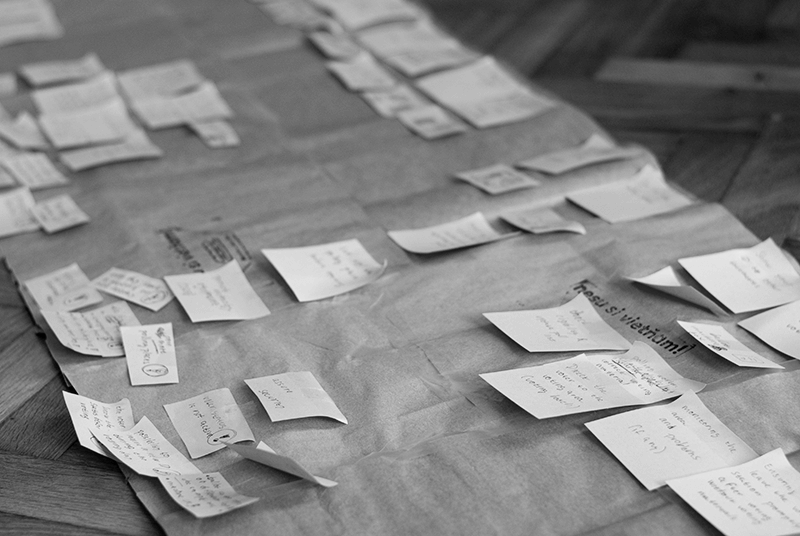
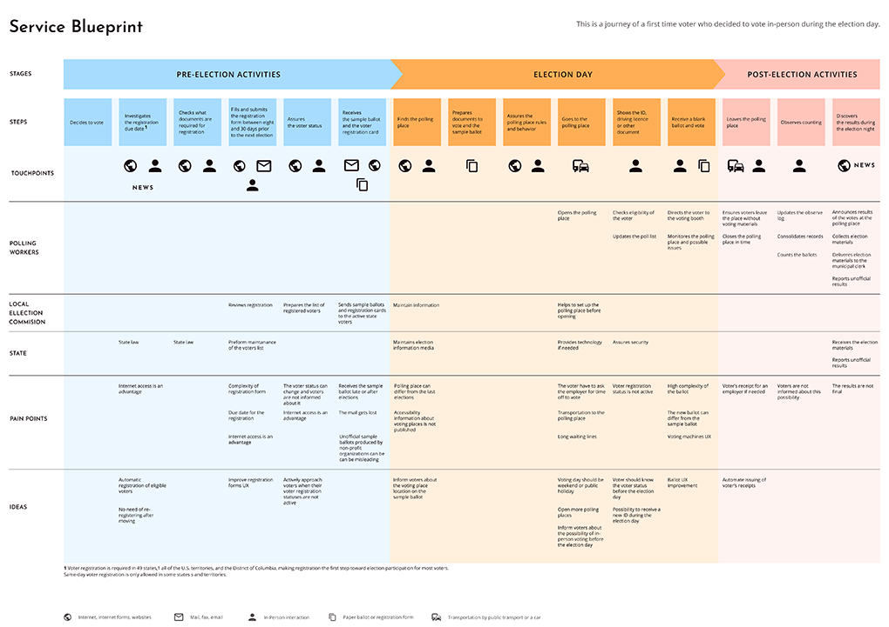

Improving the voting experience of the U.S. presidential election
Concept. Service blueprint
Project duration: November 2022 - February 2023
My responsibilities: discovery, user journey mapping, user research, service blueprint
design
My approach: I focused on understanding the voting process and then continued by
creating personas/archetypes and designing a service blueprint.
Background
The U.S. presidential election is an interesting phenomenon for a European citizen. It is also a reminder that elections are a user experience problem that can impact the end result in multiple ways.
1. Ballot design could potentially flipp the results
- In the 2020 general election, two-column ballot design led roughly 4200 voters to select more than one candidate for Senate and their votes were invalid.
- More than half a million Americans who voted by mail in 2020 had their ballots thrown out and never counted, mostly because of easy-to-fix mistakes.
2. Elections can be confusing for some voters
The U.S. is a republic of states that all have their own processes and rules, there’s little consistency from one place to another.
Based on the Pew Research Center 23% of registered voters say voting in elections is confusing and 18% say it is not convenient.
3. Voter turnout could be increased
More than 158.4 million people voted in that election, amounting to 62.8% of people of voting age. When comparing turnout among the voting-age population in the 2020 presidential election against recent national elections in 49 other countries, the U.S. ranks 31st – between Colombia and Greece.
Discovery
I decided to map the U.S. general election process by creating a service blueprint, identifying pain points and ideas or possible solutions which could improve voters' experience.
To understand the most common problems a voter can face, I did online research to create a list of themes, potential pain points, and improvement ideas.
Going through tons of articles, forums, and other research allowed to identify all relevant information. A lot of manual effort went into categorizing the data and turn that into meaningful themes.
Soon, it became apparent that similar problems appear across the themes and I decided to group them.
Service blueprint preparation.
Paper version
Every eligible voter can choose from a few voting options which he or she needs to decide:
- voting in person on Election Day,
- early voting,
- voting by mail,
- voting by mail in the Military.
I chose to map the journey of a voter who registered to vote in person on Election Day.
The user journey creation is the starting point which will show the average experience of a U.S. voter.
I added touchpoints and other supporting elements and mapped the responsibilities of poll workers, local election offices and state representatives.
First digital version
After a few rounds of reviews of the paper version, I created a digital version of the service blueprint in Figma.
Since the user journey map mostly shows the theoretical steps, I conducted a user research to learn more about voters and refine the user journey based on my learnings.
User research
It was difficult to recruit participants for interviews so a Google form with open-ended questions was needed to collect voter opinions. At the beginning of January, I started to recruit participants in LinkedIn and on Facebook groups.
I appreciated that people were willing to share their opinions. In the end, I was able to reach mainly voters who voted in up to three elections in total. All of them know the registration process and most of them have some experience with in-person voting.
How do they behave during voting and what do they think?
I also asked questions about the voting preparations and feelings about the voting process. Each color represents one voter.
User archetypes
I created two archetypes to understand the user's needs.
Enthusiastic beginner
Behaviors:
voted from one to three times,
doesn’t feel well when he or she receives an assistance which leads to an biased approach (e.g.
skipping the line),
doesn’t vote on all the issues on the ballot sometimes.
Feelings:
great, satisfied, fun
Voting felt great and so did lying to my mother that I'd vote for her geriatric conservative ghoul of a candidate.
Unexcited expert
Behaviors:
voted more than three times already,
some of them think the voting does not matter,
would like to make the process easier.
Feelings:
meh, angry, neutral
Make the voting actually matter.
Changing the user journey
I changed the user journey based on what I learned from the users...
Then I also integrated the new user journey into the service blueprint.
Reflection
The two biggest challenges were getting familiar with all the information about U.S. elections and then finding participants for the user research.
Designing the questionnaire was trickier than expected because there are a lot of question that can be asked but a long form would probably discourage people from answering them.
It would be interesting to ask follow up questions to the users but the online forms have their limitations.
Answers from the user research showed that people do not think about practical problems but about issues which are highlighted in media.
Observing people go through the election steps would help identify additional pain points and inspire new ideas to adjust the user journey. If I were located in the U.S., I would observe users instead of using online questionnaires.